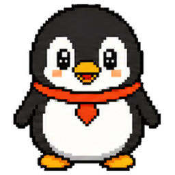

会回应你的桌面伙伴
鼠标移过、轻轻点击，或是把它拖到另一边，都有属于小伙伴的动作。换个角色，就换一种陪伴。

互动动作 · 角色切换 · 位置记忆

Wi-Fi桌面上的小伙伴 在 Steam 上查看写东西、玩游戏，或是什么都不做。
让 Wi-Fi 陪在一旁，提醒小事，也装点你的桌面。
✓ 喝一杯水
✓ 伸一个懒腰
♡ 做点喜欢的事
小小一只，待在你喜欢的位置。
常用的小工具，也可以一起住进桌面。
鼠标移过、轻轻点击，或是把它拖到另一边，都有属于小伙伴的动作。换个角色，就换一种陪伴。
定一个时间，设一段倒计时，或安排循环提醒。时间到了，就让小伙伴用气泡叫你一声。
看日期、看时间、随手记一句。把日历、时钟和便签放在身边，让日常小工具触手可及。
从一张图片开始。
我们把制作方法，写进了两本小手册。
拖动挂件，调整不透明度，选择置顶或鼠标穿透。位置和显示习惯都会记住。
通过 macOS 状态栏、Windows 托盘与快捷键，管理小伙伴和桌面上的挂件。
自定义 Steam 好友可见的状态文字，也可以放上时间、计时或倒计时。
在 Steam 上了解 Wi-Fi，开始你们的桌面日常。